Inheritance
Why one class needs another
A shop needs products, customers and staff. A bank account needs a customer to own it. So one class often needs the data and methods of another class. When classes are written alone, we hit these problems:
1 · Programs represent real life
class Product:
def show_product(self):
print("Product is available")
class Shop:
def open_shop(self):
print("Shop is open")Shop and Product both exist but know nothing about each other. A shop without products makes no sense.
2 · Code reuse saves time
class Billing:
def total_amount(self):
print(100 + 50)
class Invoice:
def total_amount(self):
print(100 + 50)The same calculation is written twice. If it changes, both places must be updated. Useful logic should be reused, not rewritten.
3 · Better code organisation
class Student:
def __init__(self):
self.name = "Ravi"
self.school_name = "ABC School"
self.school_city = "Mumbai"Student data and school data are mixed in one class. Each class should have one responsibility and talk to other classes.
4 · Avoiding duplicate code
class AppOne:
def start(self):
print("Welcome to the system")
class AppTwo:
def start(self):
print("Welcome to the system")The same message is repeated. Keep the logic in one class and reuse it, and a future change is made only once.
5 · Showing real-world relationships
class User:
def make_request(self):
print("User made a request")
class Booking:
def confirm(self):
print("Booking confirmed")A booking should belong to a user, but here they are not connected at all.
6 · Easy to improve and extend
class Order:
def process_order(self):
print("Order processed")When payment, delivery and notifications are added later, everything gets pushed into this one class. Well-structured, connected classes can grow without affecting the rest.
7 · OOP connects everything
class Engine:
def start(self):
print("Engine started")
class Car:
def drive(self):
print("Car is driving")The car works without an engine, which doesn’t match real life.
Two ways to connect classes: Has-A and Is-A
Real-life objects relate in exactly two simple ways, so OOP has exactly two relationships:
Has-A (uses / contains)
Two different classes cooperate. A house has rooms, but a house is not a room. Use it when objects work together, one needs another’s help, and functionality is shared without changing identity. Reuses code by using objects.
Is-A (inheritance)
The child is a specialised form of the parent: same type, extra features. A bicycle is a vehicle. Use it when one class is a type of another, common features are shared, and behaviour needs to be extended or modified. Reuses code by inheriting behaviour.
Has-A relationship
A Has-A relationship exists when one class uses another class by creating an object of it. If class B creates an object of class A and uses it whenever needed, we say “B HAS an A”.
Laptop has a Battery
…but a laptop is not a battery.
House has a Room
…but a house is not a room.
Person has an Address
…but a person is not an address.
BillingSystem needs calculations to generate bills, so it has a Calculator:
# Class that contains calculation logic
class Calculator:
def add(self, x, y):
return x + y
def multiply(self, x, y):
return x * y
# Class that needs calculation functionality
class BillingSystem:
def __init__(self):
self.calc = Calculator() # Creating object → Has-A relationship
def generate_bill(self, price, quantity):
total = self.calc.multiply(price, quantity)
return total
# Using the BillingSystem
bill = BillingSystem()
amount = bill.generate_bill(500, 3)
print("Total Amount:", amount)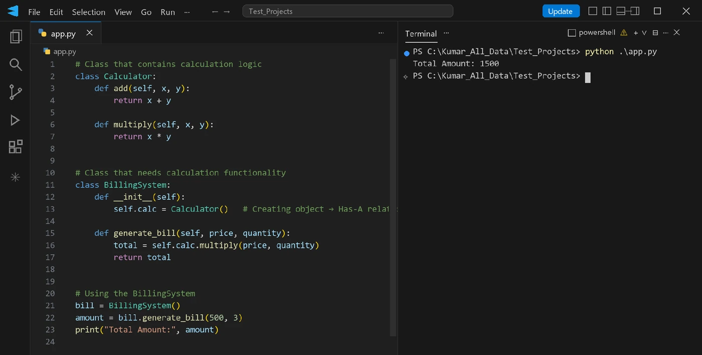
BillingSystem uses its own Calculator object: 500 × 3 = 1500.- 1Calculatoris a separate class holding all the calculation logic.
- 2self.calc = Calculator()creates a Calculator object inside BillingSystem. This line is what makes it Has-A.
- 3self.calc.multiply(price, quantity)calls the method through that object.
Real-world version: a food order uses a separate payment gateway to collect the money.
# Class that handles payments
class PaymentGateway:
def pay(self, amount):
print("Payment of", amount, "received")
# Class that needs payment functionality
class FoodOrder:
def __init__(self):
self.gateway = PaymentGateway() # Has-A relationship
def place_order(self, item, price):
print("Order placed for", item)
self.gateway.pay(price)
order = FoodOrder()
order.place_order("Veg Biryani", 250)Order placed for Veg Biryani
Payment of 250 receivedCharacteristics
- You must create an object of the class you want to use.
- Access goes through the object reference, and methods are called explicitly.
- The classes stay independent (loosely connected), so changing one doesn’t break the other.
Advantages
Modularity
Each class has one clear responsibility.
Easy maintenance
Classes can be updated independently.
Safer changes
A change in one class doesn’t directly affect others.
Composition
Combine several classes to build complex systems.
OrderService has a database client, a payment client and an LLM client. Because they are separate objects, you can swap the real payment client for a fake one in tests, or switch LLM providers for a customer, without touching the service.Why Is-A when Has-A already exists?
Sometimes a new class needs all the features of an existing class, plus some of its own. Has-A can do the job, but clumsily:
1 · Extra object creation
class Engine:
def start(self):
print("Engine started")
class Car:
def __init__(self):
self.engine = Engine() # object creation2 · Manual method access
Every call must go through the object name:
car = Car()
car.engine.start()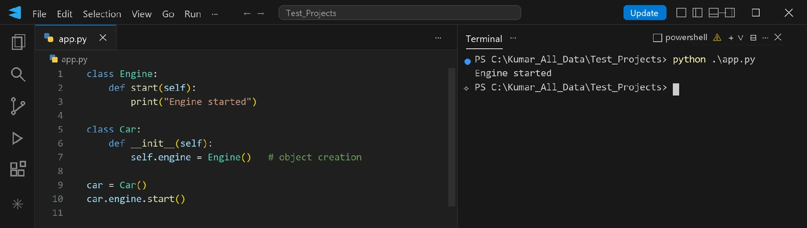
car.engine.3 · No automatic access to features
Car can’t call start() directly; it must always go through the engine object.
class Car:
def show(self):
self.engine.start()4 · Not suitable for “type-of” relationships
An employee is a person. Has-A can’t express that properly:
class Person:
def speak(self):
print("Person can speak")
class Employee:
pass5 · The better approach: inheritance
class Employee(Person):
def work(self):
print("Employee is working")
e = Employee()
e.speak() # inherited from Person, no Person object needed
e.work()Person can speak
Employee is workingEmployee(Person) links the classes directly, and Employee automatically gets all of Person’s features without creating any object.
Is-A: inheritance
- The parent class holds common, general features.
- The child class is a more specific form of the parent.
- The child automatically gets all variables and methods of the parent; no parent object is needed.
- The child can add its own new features.
The problem without inheritance
class Parent:
def show_parent(self):
print("This is a method from the Parent class")
# Child class (WITHOUT inheritance)
class Child:
def show_child(self):
print("This is a method from the Child class")
# Using the Child object
c = Child()
c.show_child()
c.show_parent() # ERROR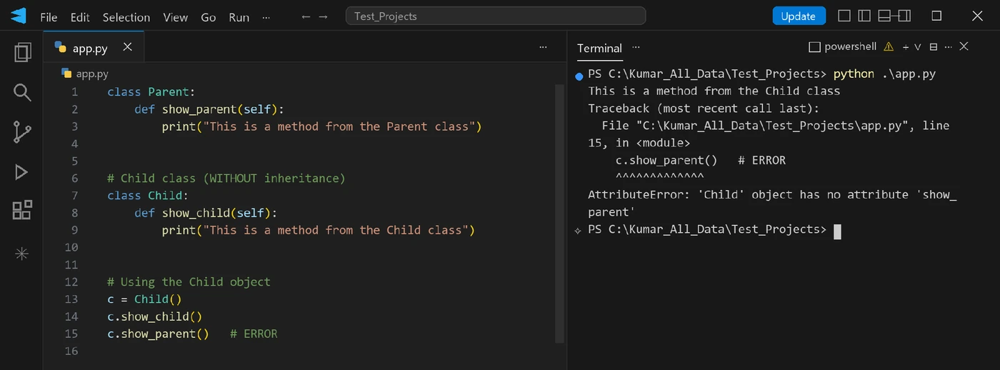
Parent and Child are completely separate classes. Child knows nothing about Parent, so c.show_parent() raises an AttributeError. Without inheritance, code can’t be reused automatically.
Solved with inheritance
class Parent:
def show_parent(self):
print("This is a method from the Parent class")
# Child class WITH inheritance
class Child(Parent):
def show_child(self):
print("This is a method from the Child class")
# Using the Child object
c = Child()
c.show_child()
c.show_parent()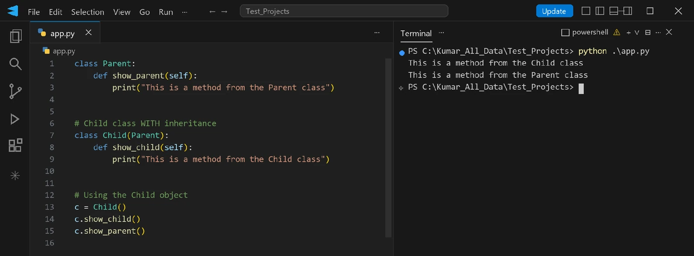
Child(Parent), both calls work on the same child object.class Child(Parent) means Child IS A Parent. The child object can call its own method and the parent’s, and no separate Parent object is created: code reuse happens automatically.
Real-world version: a savings account is a bank account, and adds interest on top.
class BankAccount:
def show_balance(self):
print("Showing the account balance")
# SavingsAccount IS A BankAccount
class SavingsAccount(BankAccount):
def add_interest(self):
print("Adding monthly interest")
acc = SavingsAccount()
acc.add_interest()
acc.show_balance()Adding monthly interest
Showing the account balanceConstructors in inheritance
A constructor runs automatically when an object is created. The rule: Python looks for __init__ starting in the object’s own class, runs the first one it finds, and stops.
| Case | Parent has __init__? | Child has __init__? | What runs on Child() |
|---|---|---|---|
| 1 | ✅ | ❌ | Parent’s constructor (inherited) |
| 2 | ❌ | ✅ | Child’s constructor |
| 3 | ✅ | ✅ | Only the child’s constructor |
Case 1: constructor only in the parent
class Parent:
def __init__(self):
print("Parent constructor is called")
class Child(Parent):
pass
c = Child()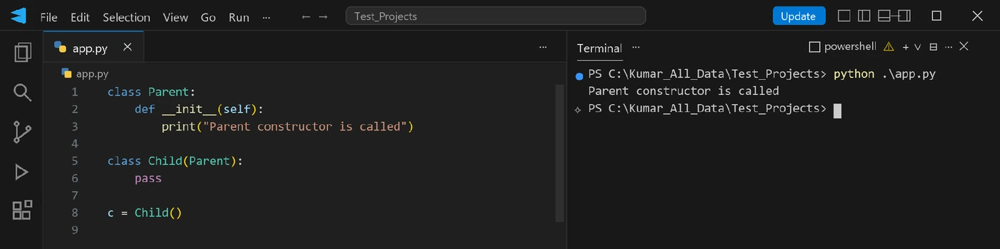
Child has no constructor, so Python automatically calls the parent’s.Case 2: constructor only in the child
class Parent:
pass
class Child(Parent):
def __init__(self):
print("Child constructor is called")
c = Child()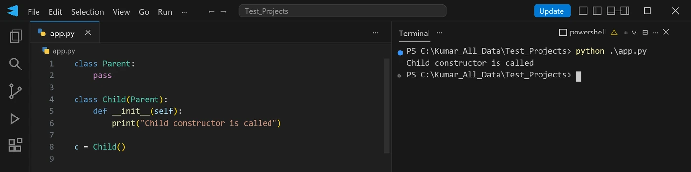
Case 3: constructor in both
class Parent:
def __init__(self):
print("Parent constructor is called")
class Child(Parent):
def __init__(self):
print("Child constructor is called")
c = Child()
__init__ in Child, stops searching, and ignores the parent’s unless you call it yourself. This is intentional: the child’s __init__ replaces the parent’s. That replacing is called method overriding (next note).Why this is a problem
If the parent constructor creates important data, that data is never created:
class Parent:
def __init__(self):
self.name = "Parent Name"
class Child(Parent):
def __init__(self):
self.age = 10
c = Child()
print(c.name) # ERROR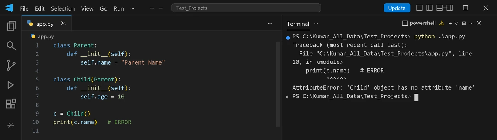
name was never created.The child constructor runs, but the parent constructor does not. So name is never created, and c.name raises an AttributeError: the program can break.
The fix: super()
super() lets the child class talk to its parent class. super() means “go to the parent class”, and super().__init__() means “run the parent’s constructor”.
class Parent:
def __init__(self):
self.name = "Rahul"
print("Parent constructor executed")
class Child(Parent):
def __init__(self):
super().__init__()
self.age = 10
print("Child constructor executed")
c = Child()
print(c.name)
print(c.age)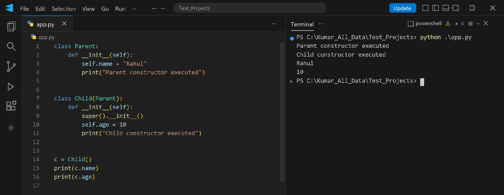
super()), then the child’s; both name and age exist.- Creating
Child()enters the child constructor. super().__init__()runs the parent constructor, which createsname.- Control comes back to the child constructor, which creates
age. - Only one object is created.
super()does not create a new object; it only calls the parent’s constructor.
super() doesn’t create a parent object. It runs the parent’s setup code on the same object, then returns.With parameters (the common case)
class Person:
def __init__(self, name):
self.name = name
class Student(Person):
def __init__(self, name, roll_no):
super().__init__(name)
self.roll_no = roll_no
s = Student("Amit", 101)
print(s.name)
print(s.roll_no)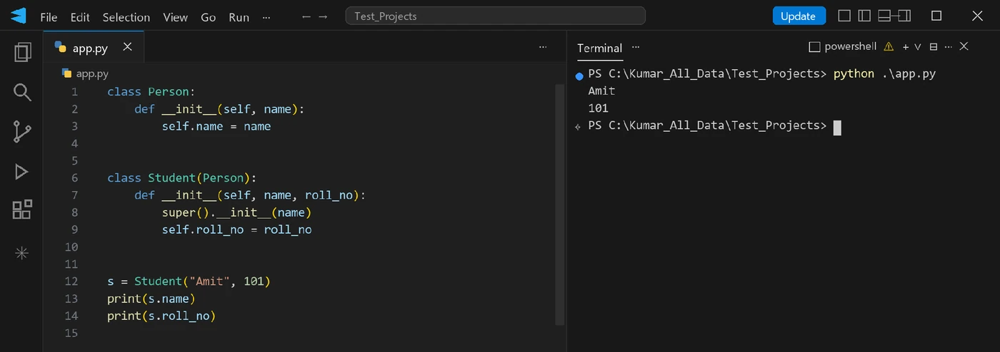
super().__init__(name) hands name up to the parent; the child stores roll_no.The parent needs name; the child needs name and roll_no. super().__init__(name) sends name to the parent constructor; the parent initializes name, and the child initializes roll_no. Real-world version: a manager is an employee with a team size.
class Employee:
def __init__(self, name, salary):
self.name = name
self.salary = salary
class Manager(Employee):
def __init__(self, name, salary, team_size):
super().__init__(name, salary)
self.team_size = team_size
m = Manager("Neha", 90000, 8)
print(m.name)
print(m.salary)
print(m.team_size)Neha
90000
8Types of inheritance
Real projects need different class structures:
- One parent, many children: Developer, Tester and Manager all share basic employee details.
- Chains of specialisation: a Lead Developer builds on a Senior Developer, who builds on a Developer.
- Features from independent sources: a Project Manager needs employee features and team-coordination features.
- Flexible design: choosing the right structure keeps the design clear and scalable.
| Type | Shape | Example in this note |
|---|---|---|
| Single | one child, exactly one parent | Car → Vehicle |
| Multilevel | a chain: a class inherits from a child class | CollegeStudent → Student → Person |
| Hierarchical | many children, one parent | Email/SMSNotification → Notification |
| Multiple | one child, two or more parents | AllInOneMachine → Printer, Scanner |
| Hybrid | two or more types combined | TeachingAssistant → Student, Teacher → User |
Single inheritance
One child class inherits from exactly one parent class (“single parent, single child”), the simplest form. The child can use the parent’s variables and methods plus its own; the parent cannot use the child’s, because it knows nothing about the child. Access always flows from parent to child.
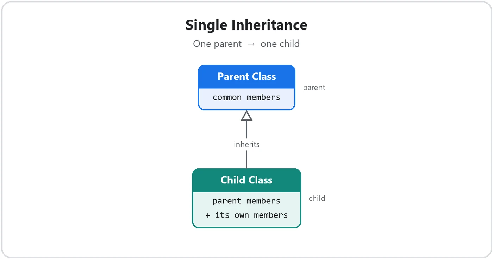
A Car is a Vehicle, so Car inherits from Vehicle:
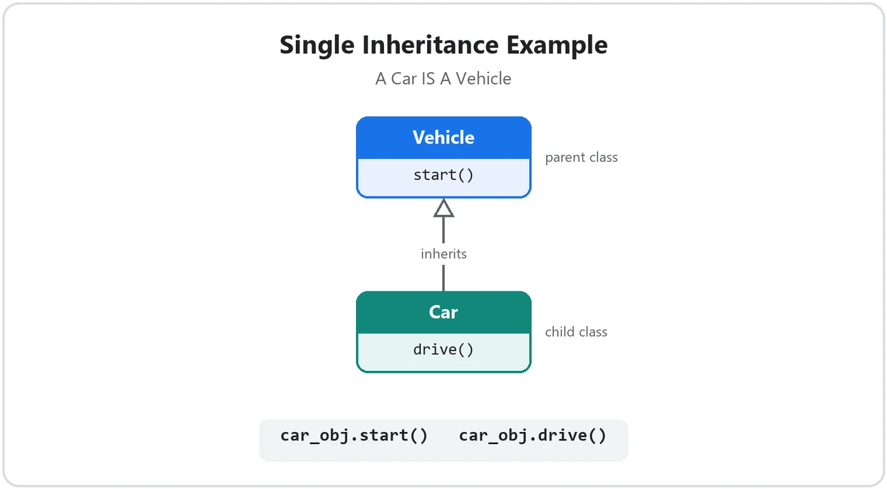
Car object can call start() and drive().- 1Creating the parent class
Vehicle.start()represents behaviour common to all vehicles. - 2Creating the child class
Vehicleinside the parentheses meansCarinherits fromVehicle.Caralso adds its owndrive()method. - 3Creating an object and calling both methodsCreate a
Carand callstart()anddrive()on it.
Complete program and output
class Vehicle:
def start(self):
print("The vehicle is starting")
class Car(Vehicle):
def drive(self):
print("The car is being driven")
car_obj = Car()
car_obj.start()
car_obj.drive()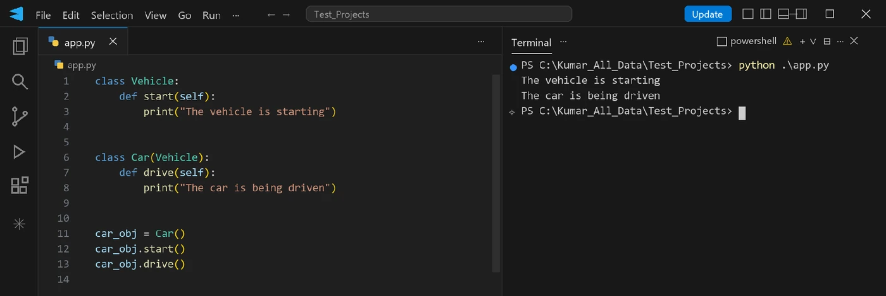
start() comes from the parent Vehicle and drive() from the child Car, both called on the same child object, without rewriting any code. Real-world version: a smartphone is a phone that can also browse.
class Phone:
def call(self):
print("Making a phone call")
class Smartphone(Phone):
def browse(self):
print("Browsing the internet")
my_phone = Smartphone()
my_phone.call()
my_phone.browse()Making a phone call
Browsing the internetObservations: one parent, one child; simple, and best when a class is a direct extension of another. The best starting point for beginners.
Multilevel inheritance
A class inherits from another class, and a further class inherits from that child, forming a chain. A class can use members of its parent and of every class above it, so the last class in the chain has the most features. Access flows downward only: parents cannot access child members.
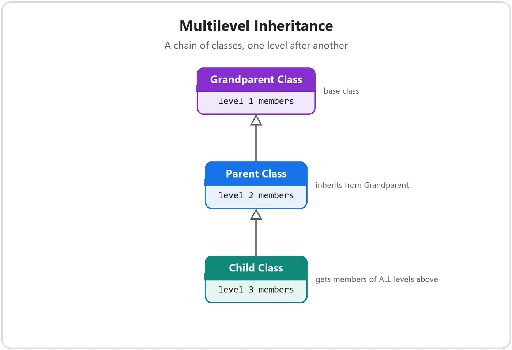
A CollegeStudent is a Student, and a Student is a Person:
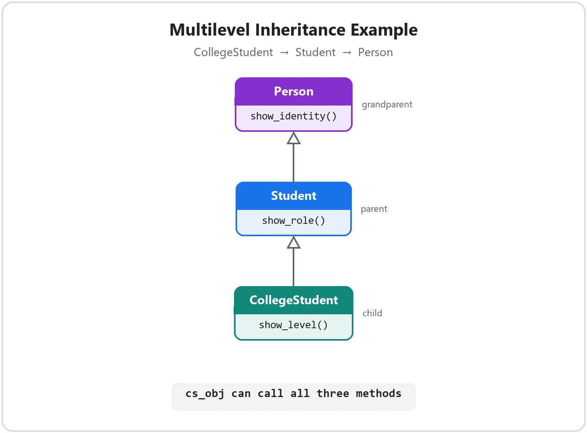
cs_obj can call all three methods.- 1Creating the base (grandparent) class
Personwithshow_identity(). - 2Creating the intermediate (parent) class
Student(Person)getsshow_identity()automatically and addsshow_role(). - 3Creating the final (child) class
CollegeStudent(Student)inherits fromStudent, and indirectly fromPersonas well. - 4Creating an object and calling methods from all levelsOne
cs_objcalls all three methods.
Complete program and output
class Person: # base (grandparent)
def show_identity(self):
print("This is a person")
class Student(Person): # intermediate (parent)
def show_role(self):
print("This person is a student")
class CollegeStudent(Student): # final (child)
def show_level(self):
print("This student studies in a college")
cs_obj = CollegeStudent()
cs_obj.show_identity()
cs_obj.show_role()
cs_obj.show_level()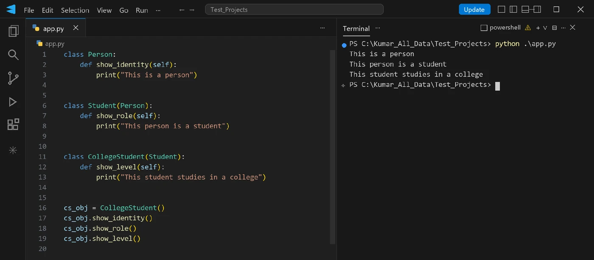
show_identity() comes from Person, show_role() from Student, and show_level() from CollegeStudent. The lowest class can use members from all levels above it.
Student gets show_identity() automatically and adds show_role(). CollegeStudent inherits from Student directly and from Person indirectly. Real-world version: bank accounts that build on each other.
class Account:
def open_account(self):
print("Account opened")
class SavingsAccount(Account):
def add_interest(self):
print("Interest added at 4%")
class SeniorCitizenAccount(SavingsAccount):
def add_bonus_interest(self):
print("Extra 0.5% interest added for senior citizens")
acc = SeniorCitizenAccount()
acc.open_account()
acc.add_interest()
acc.add_bonus_interest()Account opened
Interest added at 4%
Extra 0.5% interest added for senior citizensObservations: each class builds on the previous one, so reuse grows level by level. Best when features grow from general to specific.
Hierarchical inheritance
Several child classes inherit from one parent class (“single parent, multiple children”). Common code goes in the parent; special code goes in each child. Each child can use the parent’s members and its own, but not a sibling’s, and the parent can’t use any child’s.
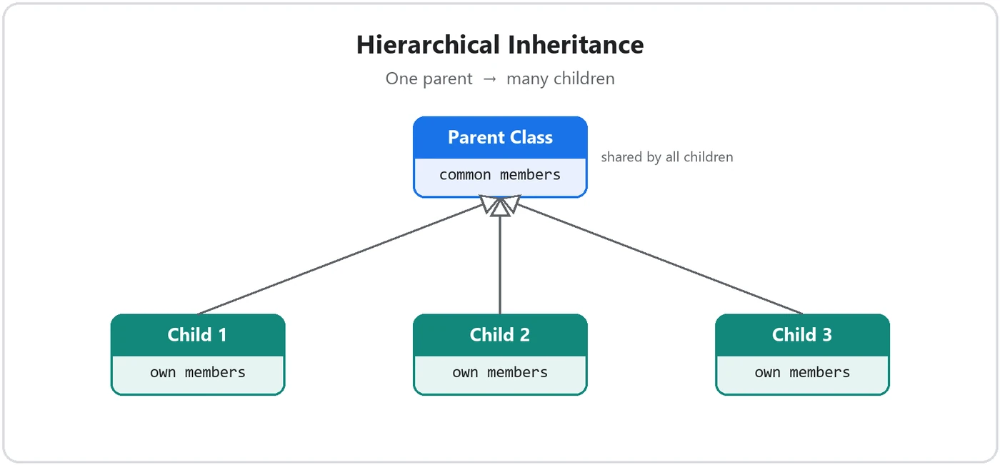
EmailNotification and SMSNotification are both types of Notification:
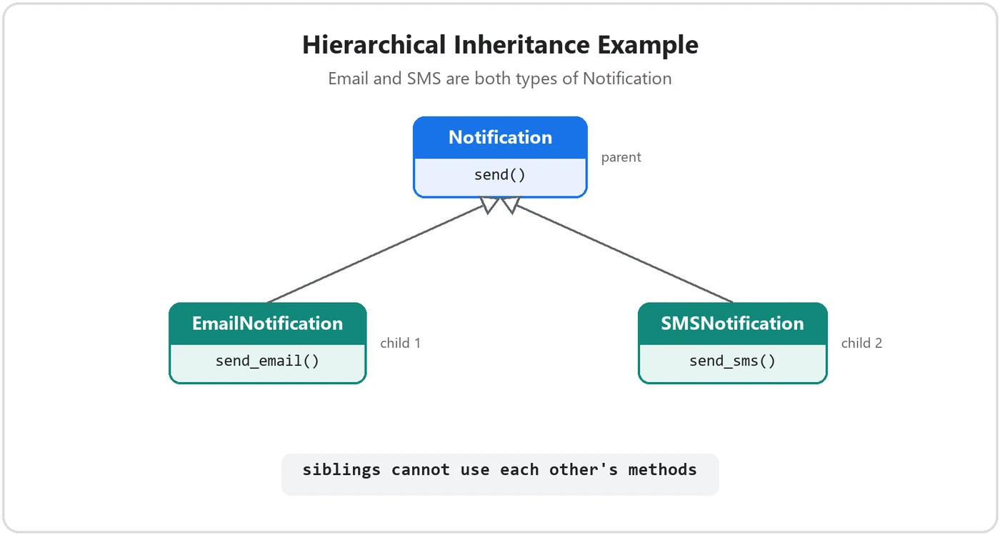
send(); siblings cannot use each other’s methods.- 1Creating the parent class
send()is behaviour common to all notifications. - 2Creating the first child class
EmailNotificationaddssend_email(). - 3Creating the second child class
SMSNotificationaddssend_sms(). Both children sharesend(), and each adds its own method. - 4Creating objects and calling methodsOne object of each child.
Complete program and output
class Notification:
def send(self):
print("Sending a notification")
class EmailNotification(Notification):
def send_email(self):
print("Sending an email notification")
class SMSNotification(Notification):
def send_sms(self):
print("Sending an SMS notification")
email_obj = EmailNotification()
sms_obj = SMSNotification()
email_obj.send()
email_obj.send_email()
sms_obj.send()
sms_obj.send_sms()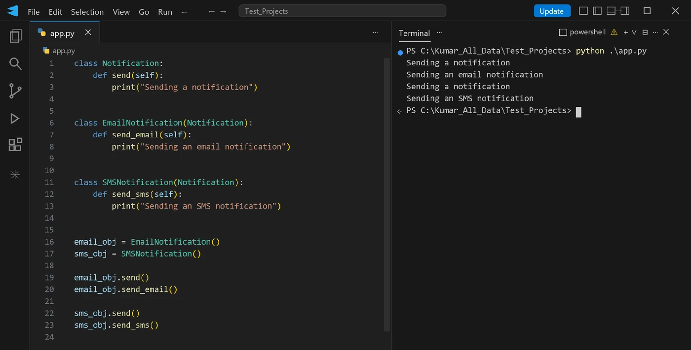
“Sending a notification” appears twice because both children inherit send(). But siblings don’t share: calling send_sms() on email_obj (or send_email() on sms_obj) would raise an error:
email_obj.send_sms()AttributeError: 'EmailNotification' object has no attribute 'send_sms'Real-world version: UPI and card payments share the same verification step, each paying its own way.
class Payment:
def verify(self):
print("Verifying payment details")
class UPIPayment(Payment):
def pay_by_upi(self):
print("Paying using UPI")
class CardPayment(Payment):
def pay_by_card(self):
print("Paying using a debit card")
upi = UPIPayment()
card = CardPayment()
upi.verify()
upi.pay_by_upi()
card.verify()
card.pay_by_card()Verifying payment details
Paying using UPI
Verifying payment details
Paying using a debit cardObservations: common code is written once and reused by many classes. Best when classes share a base but behave differently.
Multiple inheritance
One child class inherits from two or more parent classes at the same time (“multiple parents, single child”).
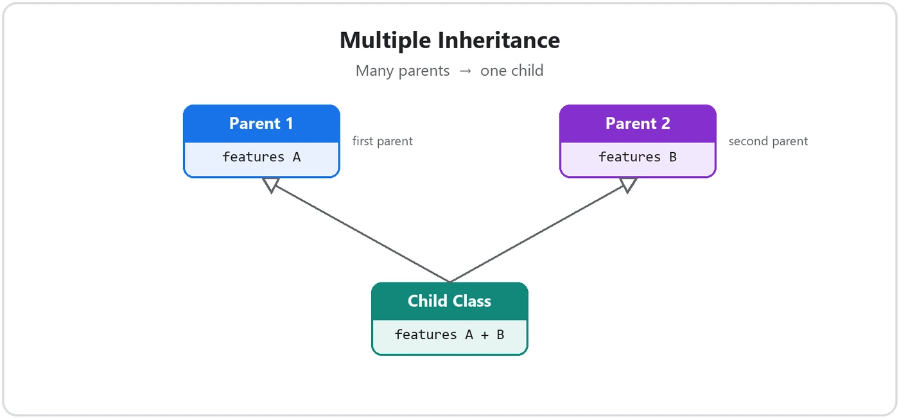
It combines features from different sources, which is powerful, but needs care when parents have methods with the same name.
An AllInOneMachine can both print and scan:
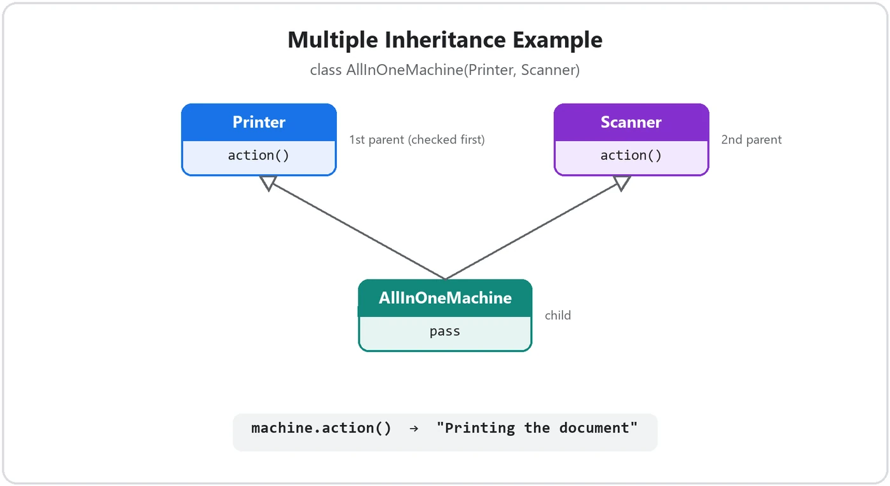
action(); the first parent listed wins.- 1Creating the first parent class
Printerwithaction(). - 2Creating the second parent class
Scanneralso has a method namedaction(). This creates a conflict. - 3Creating the child class
AllInOneMachine(Printer, Scanner). The order of the parent classes is very important. - 4Creating an object and calling the conflicting method
machine.action()
Complete program and output
class Printer:
def action(self):
print("Printing the document")
class Scanner:
def action(self):
print("Scanning the document")
class AllInOneMachine(Printer, Scanner):
pass
machine = AllInOneMachine()
machine.action()action() from Printer, the first parent listed.Python runs action() from the first parent, Printer, because it searches parents in the order they are listed. Python searches for a method in this order:
- 1First in the child class itself.
- 2Then in the first parent listedthen the next parent, and so on.
- 3Not found anywhere?An error is raised.
If we change the order, the output changes:
class AllInOneMachine(Scanner, Printer):
pass
machine = AllInOneMachine()
machine.action()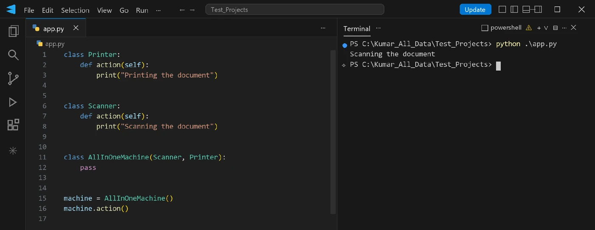
Parent class order controls method selection. Real-world version: a smartwatch is a watch and a fitness tracker, and both have show().
class Watch:
def show(self):
print("Showing the time")
class FitnessTracker:
def show(self):
print("Showing today's step count")
class SmartWatch(Watch, FitnessTracker):
pass
my_watch = SmartWatch()
my_watch.show()Showing the timeHybrid inheritance
Two or more inheritance types combined in one structure, e.g. hierarchical + multiple. Real systems are rarely simple, so this is common in large applications.
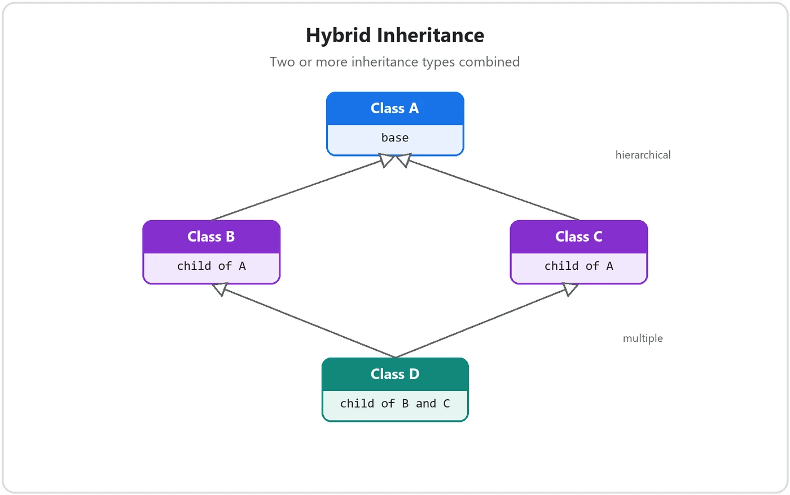
Python looks in the current class first, then searches the parents in a fixed order called the Method Resolution Order (MRO), and runs the first match.
On a learning platform, Student and Teacher both inherit from User (hierarchical), and TeachingAssistant inherits from both Student and Teacher (multiple):
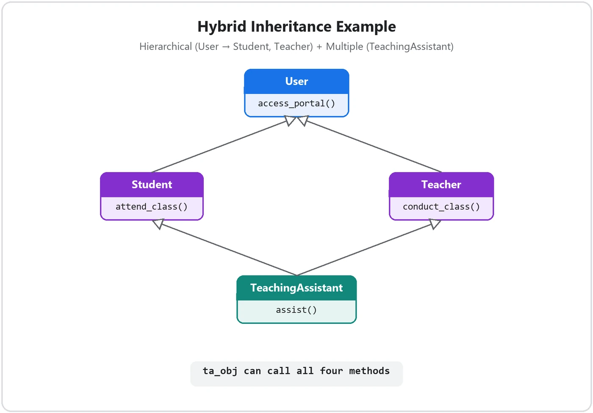
ta_obj can call all four methods.- 1Creating the base parent class
Userwithaccess_portal(). - 2Creating child classes (hierarchical inheritance)
Student(User)andTeacher(User). - 3Creating a child class (multiple inheritance)
TeachingAssistant(Student, Teacher). This makes the overall structure hybrid inheritance. - 4Creating an object and calling methods from different pathsOne
ta_objcalls all four.
Complete program and output
class User:
def access_portal(self):
print("User can access the learning portal")
class Student(User):
def attend_class(self):
print("Student is attending the class")
class Teacher(User):
def conduct_class(self):
print("Teacher is conducting the class")
class TeachingAssistant(Student, Teacher):
def assist(self):
print("Teaching assistant is helping students")
ta_obj = TeachingAssistant()
ta_obj.access_portal()
ta_obj.attend_class()
ta_obj.conduct_class()
ta_obj.assist()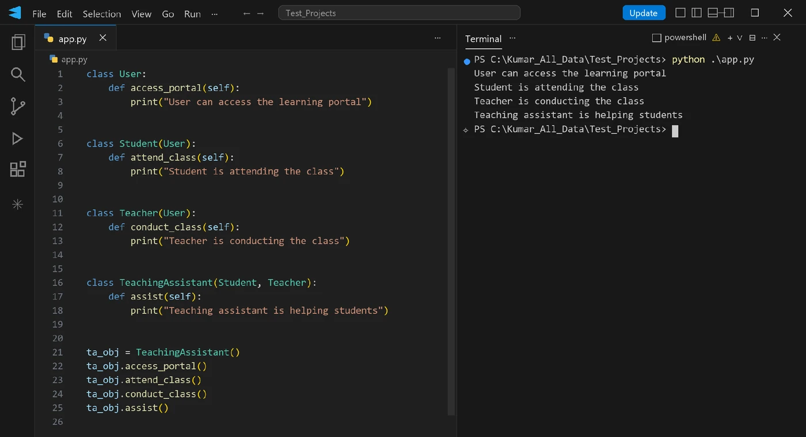
access_portal() comes from User, attend_class() from Student, conduct_class() from Teacher, and assist() from TeachingAssistant. Python finds each method using its MRO.
You can ask Python for this order yourself:
print([cls.__name__ for cls in TeachingAssistant.mro()])['TeachingAssistant', 'Student', 'Teacher', 'User', 'object']Real-world version: in a hospital, Doctor and Administrator are both Staff, and a Medical Director is both.
class Staff:
def mark_attendance(self):
print("Attendance marked")
class Doctor(Staff):
def treat_patient(self):
print("Doctor is treating a patient")
class Administrator(Staff):
def manage_budget(self):
print("Administrator is managing the budget")
class MedicalDirector(Doctor, Administrator):
def lead_hospital(self):
print("Medical director is leading the hospital")
md = MedicalDirector()
md.mark_attendance()
md.treat_patient()
md.manage_budget()
md.lead_hospital()Attendance marked
Doctor is treating a patient
Administrator is managing the budget
Medical director is leading the hospitalObservations: hybrid matches complex real systems and maximises reuse, but design it carefully so it stays readable, and use it only when simpler types aren’t enough. The next note works through MRO step by step.
BaseModel, custom exceptions inherit from Exception, and mixins (small extra parents) add logging or serialisation. When a customer’s codebase behaves oddly, SomeClass.mro() tells you exactly where a method is really coming from.Key terms
- Has-A relationship (composition)
- One class uses another by creating and holding an object of it, e.g.
self.calc = Calculator(). The classes stay independent. - Is-A relationship (inheritance)
- One class is a specialised type of another and automatically gets all its variables and methods, e.g.
class Car(Vehicle). - Parent class (base class)
- The general class whose features are inherited by other classes.
- Child class (derived class)
- A more specific class that inherits from a parent and can add its own features.
- super()
- A built-in that gives a child access to its parent class;
super().__init__()runs the parent’s constructor on the same object. - Single inheritance
- One child class inherits from exactly one parent class.
- Multilevel inheritance
- A chain of inheritance where a class inherits from a class that is itself a child, e.g. CollegeStudent → Student → Person.
- Hierarchical inheritance
- Several child classes inherit from the same single parent class.
- Multiple inheritance
- One child class inherits from two or more parents; same-named methods are resolved by the order the parents are listed.
- Hybrid inheritance
- A structure that combines two or more types of inheritance, such as hierarchical plus multiple.
- Method Resolution Order (MRO)
- The fixed order in which Python searches a class and its ancestors for a method or attribute; see it with
ClassName.mro().
Self-check
Pick an answer. You’ll see right away whether it’s correct and why.
Which pair is a Has-A relationship?
- Dog and Animal
- Laptop and Battery
- Savings account and Bank account
- Smartphone and Phone
A laptop has a battery but is not a battery. The others are “is a” relationships.
What does class Child(Parent): give a Child object?
- A separate Parent object stored inside it
- Only the parent’s variables
- All the parent’s variables and methods, automatically
- Nothing until you call super()
Inheritance hands every parent member to the child with no parent object needed.
Parent and Child both define __init__. What runs on Child()?
- Only the child’s constructor
- Parent’s, then child’s
- Child’s, then parent’s
- Only the parent’s
Python finds __init__ in Child and stops. The parent’s runs only if you call super().__init__().
The parent constructor sets self.name, the child constructor sets only self.age with no super(). What does print(child.name) do?
- Prints the parent’s name
- Prints None
- Prints an empty string
- Raises AttributeError
The parent constructor never ran, so name was never created.
What does super().__init__(name) do inside Student.__init__?
- Creates a new Person object
- Runs Person’s constructor on the same Student object, passing name
- Deletes the parent’s constructor
- Makes Student a static class
super() reaches the parent’s method; there is still only one object.
class AllInOne(Scanner, Printer), and both parents define action(). Which runs?
- Printer’s
- Both, in order
- Scanner’s
- An error is raised
Python checks parents in the order they’re listed, and Scanner is first.
EmailNotification and SMSNotification both inherit from Notification. Can an EmailNotification object call send_sms()?
- Yes, siblings share methods
- Yes, through the parent
- Only with super()
- No, it raises AttributeError
In hierarchical inheritance each child sees the parent and itself, never its siblings.
CollegeStudent → Student → Person. Which kind of inheritance is this?
- Multilevel
- Hierarchical
- Multiple
- Single
It’s a chain: each class inherits from the one above, so the last class gets features from every level.
All of it, in one sentence
Classes connect either by Has-A (one object holds and uses another) or Is-A (inheritance: the child gets everything the parent has); when both define a constructor, call super().__init__() so the parent’s setup isn’t skipped, and choose among single, multilevel, hierarchical, multiple and hybrid shapes to fit the problem.
— Vishwa Mohan